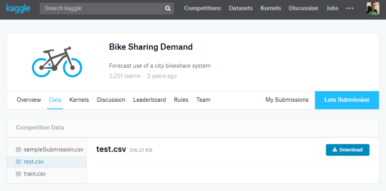
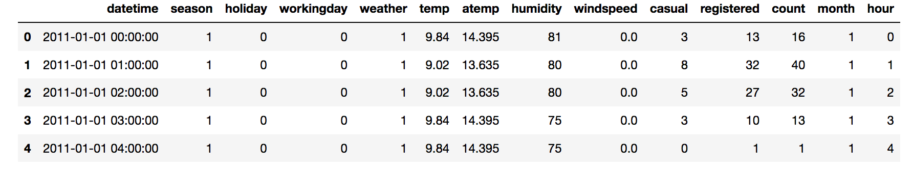
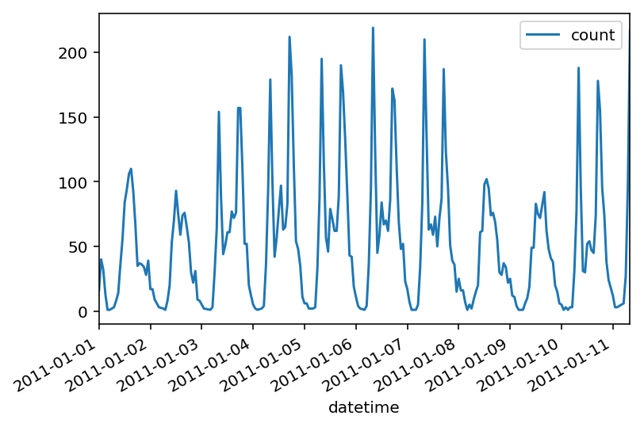

Git Repo Link
Git Repo LinkBefore we start..
In this post, I am going to show you how to implement Neural Network in python. But I won’t talk about “What is Neural Network” or “How does it work?” here
There are a lot of Youtube videos and Courses out there.
I am going to use Bike-Sharing-Demand data from Kaggle 
Data preparation
Importing libraries
%matplotlib inline
%config InlineBackend.figure_format = 'retina'
import numpy as np
import pandas as pd
import matplotlib.pyplot as plt
from sklearn.model_selection import train_test_split
Qucik look on data set
import datetime
# Quick look
rides=pd.read_csv('data/train.csv')
# Extract 'month' and 'hour' features from 'datetime'
rides.datetime = rides.datetime.apply(pd.to_datetime)
rides['month'] = rides.datetime.apply(lambda x: x.month)
rides['hour'] = rides.datetime.apply(lambda x : x.hour)
rides.head()
# First 30 days
rides[:24*10].plot(x='datetime', y='count')


One Hot Encoding
One Hot Encoding is a process of converting categorical variable into numerical variable
For example, we have ‘season’ field (spring, summer, fall, winter)
The data point with spring will be converted to [1, 0, 0, 0],
and the data point with fall will be [0, 0, 1, 0].
# I am using pandas library
dummy_fields = ['season', 'weather', 'workingday', 'holiday', 'hour', 'month']
for field in dummy_fields:
dummy = pd.get_dummies(rides[field], prefix=field, drop_first=False)
rides = pd.concat([rides, dummy], axis=1)
# Drop off fields converted into numerical value, and fields we don't want
drop_fields = ['datetime', 'season', 'weather', 'workingday', 'holiday', 'registered', 'casual', 'atemp', 'hour', 'month']
data = rides.drop(drop_fields, axis=1)
print (data.columns)
Index(['temp', 'humidity', 'windspeed', 'count', 'season_1', 'season_2',
'season_3', 'season_4', 'weather_1', 'weather_2', 'weather_3',
'weather_4', 'workingday_0', 'workingday_1', 'holiday_0', 'holiday_1',
'hour_0', 'hour_1', 'hour_2', 'hour_3', 'hour_4', 'hour_5', 'hour_6',
'hour_7', 'hour_8', 'hour_9', 'hour_10', 'hour_11', 'hour_12',
'hour_13', 'hour_14', 'hour_15', 'hour_16', 'hour_17', 'hour_18',
'hour_19', 'hour_20', 'hour_21', 'hour_22', 'hour_23', 'month_1',
'month_2', 'month_3', 'month_4', 'month_5', 'month_6', 'month_7',
'month_8', 'month_9', 'month_10', 'month_11', 'month_12'],
dtype='object')
Normalize data
To get a higher accuracy, we need to normalized fields with continous variable.
That is, each continous variable fields will have zero mean and standard deviation of 1
quant_features = ['count', 'temp', 'humidity', 'windspeed']
# We will need this mean/std for later !
# store scalings in a dictionary
scaled_features = {}
for each in quant_features:
mean, std = data[each].mean(), data[each].std()
scaled_features[each] = [mean, std]
data.loc[:, each] = (data[each] - mean)/std
Suffle / Split data
Suffling data is important, it helps avoiding biased data. (There are some data set ordered by certain field)
# Suffle / Split data
[train, valid] = train_test_split(data, test_size = 0.10)
# Seperate data into inputs(features) and output(target)
train_inputs, train_outputs = train.drop('count', axis=1), train['count']
valid_inputs, valid_outputs = valid.drop('count', axis=1), valid['count']
print ("Train Inputs: {}\t Train Outputs: {}".format(train_inputs.shape, train_outputs.shape))
print ("Valid Inputs: {}\t Valid Outputs: {}".format(valid_inputs.shape, valid_outputs.shape))
Train Inputs: (9797, 51) Train Outputs: (9797,)
Valid Inputs: (1089, 51) Valid Outputs: (1089,)
Build Neural Network from Scratch !
You definitely will need to understand How Neural Network Works before the implemtation.
if you are having a hard time implementing, try to check my other post about Linear Regression
class NeuralNetwork(object):
# Define structure of NN, create placeholders
def __init__(self, input_nodes, hidden_nodes, output_nodes, learning_rate):
# Setting number of nodes
self.input_nodes = input_nodes
self.hidden_nodes = hidden_nodes
self.output_nodes = output_nodes
self.learning_rate = learning_rate
# Setting initial weights
#np.random.normal(mean, sd, size)
self.weights_input_hidden = np.random.normal(0.0,
self.input_nodes ** -0.5,
(self.input_nodes,self.hidden_nodes))
self.weights_hidden_output = np.random.normal(0.0,
self.hidden_nodes ** -0.5,
(self.hidden_nodes,self.output_nodes))
# sigmoid function
self.sigmoid = lambda x : 1 / (1 + np.exp(-x))
# Forward pass / Backward pass / Weights updates
def train(self, features, targets):
n_records = features.shape[0]
# Set placeholder for weight changes
delta_weights_input_hidden = np.zeros(self.weights_input_hidden.shape)
delta_weights_hidden_output = np.zeros(self.weights_hidden_output.shape)
# Forward/Backward pass for each records
for X, y in zip(features, targets):
## Forward pass - input-hidden
hidden_inputs = np.dot(X, self.weights_input_hidden)
hidden_outputs = self.sigmoid(hidden_inputs)
## Forward pass - hidden-output
outputs= np.dot(hidden_outputs, self.weights_hidden_output)
## Backward pass
# Caclulate error on each layers
error = y - outputs
hidden_error = np.dot(self.weights_hidden_output, error)
# Calculate errors_term for each layer
output_error_term = error # derivative of 'f(x) = x' is '1'
# The node in hidden layer with bigger weights has bigger "impact" on output
# which means has bigger contribution on "error"
hidden_error_term = hidden_error * hidden_outputs * (1 - hidden_outputs)
## stack the weight steps
delta_weights_input_hidden += hidden_error_term * X[:, None]
delta_weights_hidden_output += output_error_term * hidden_outputs[:, None]
# Gradient descent, update weights
self.weights_input_hidden += self.learning_rate * delta_weights_input_hidden / n_records
self.weights_hidden_output += self.learning_rate * delta_weights_hidden_output / n_records
# Returns prediction using input
def run(self, features):
# Run forward pass, returns predict y value
hidden_inputs = np.dot(features, self.weights_input_hidden)
hidden_outputs = self.sigmoid(hidden_inputs)
outputs = np.dot(hidden_outputs, self.weights_hidden_output)
return outputs
# Returns 'Mean Squared Error'
def MSE(y, Y):
return np.mean((y-Y)**2)
Finishing
Let’s wrap it up here. I know this post isn’t that long, but it actually has a lot of information.(Will require long enough time for who trying to follow it.)
On next post I will show you
- How to train the model we built
- Check the result with actual value using plot
- Submit the result on Kaggle